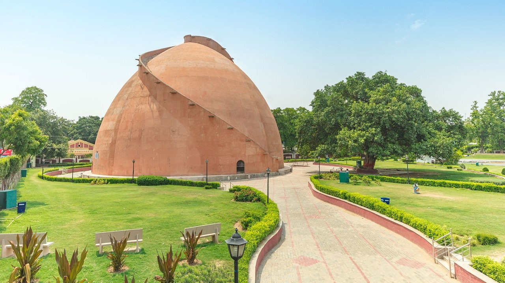
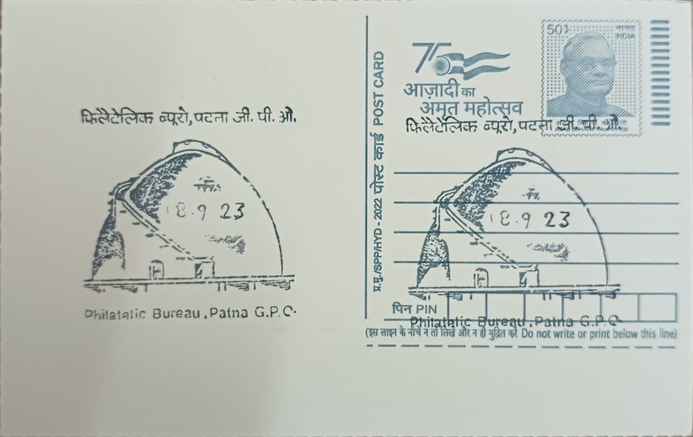

Gol Ghar, also rendered Golghar, takes its name from the Hindi words for "round house," a direct description of its distinctive beehive-shaped profile rising above the western edge of Gandhi Maidan in Patna. Its origin lies not in myth but in administrative response to catastrophe: the structure was conceived in the aftermath of the Bengal famine of 1770, a disaster that killed an estimated ten million people across Bihar, Bengal, and neighbouring provinces under East India Company rule. Governor-General Warren Hastings ordered its construction as part of what a contemporary inscription at its base describes as "a general plan for the perpetual prevention of famine in these provinces," envisioning it as the first of a planned series of grain depots across the region.
As a category, Gol Ghar belongs to the rare class of purpose-built colonial-era granaries, and its significance rests less on religious or cultural weight than on its place in the administrative and engineering history of British India. It is counted among Patna's most visited heritage sites and has been designated a protected monument, placing it alongside the city's other notable colonial structures as a reference point for the period's public works. Its enduring recognisability has also made it a natural subject for philatelic and tourist imagery associated with Bihar, reflecting its status as a visual shorthand for Patna itself.
The granary was designed by Captain John Garstin of the Bengal Engineers and completed on 20 July 1786, built in a stupa-like form with no internal pillars supporting its dome. Its walls measure roughly 3.6 metres thick at the base, tapering toward the summit, and the structure rises to a height of about 29 metres with a rated storage capacity of approximately 140,000 tonnes of grain. Twin spiral staircases, comprising some 145 steps, wind around the exterior to the top, originally intended to let labourers carrying grain sacks ascend and descend simultaneously without colliding on a shared path.
A fundamental design flaw undermined the granary's intended purpose: the doors built into its base opened inward, so that once grain was poured in from the top, the resulting pressure made the doors impossible to open from inside, rendering the structure unusable for its stated function. As a result, Gol Ghar was never filled with grain reserves as planned, and no further granaries in the proposed network were ever built, leaving it a solitary and somewhat ironic monument to a famine-prevention scheme that never operated. Visitors who climb the staircases today are instead rewarded with a panoramic view over Gandhi Maidan, the Ganges, and the wider city skyline.
In recent years, state authorities in Bihar have announced redevelopment plans for Gol Ghar aimed at improving visitor facilities, upgrading seating and lighting around the campus, and refurbishing its long-closed interior and staircases, with work to proceed only after assessment and approval from the Archaeological Survey of India to safeguard its structural integrity. The site has also periodically hosted laser and sound shows on Gandhi Maidan as part of civic cultural programming tied to the monument. Under this continuing arrangement between state heritage officials and the ASI, Gol Ghar functions today less as the granary it was built to be than as a managed public monument and viewpoint, drawing steady footfall from residents and visitors who climb it chiefly for the view rather than any grain it was ever meant to hold.
| Date of Introduction | Not Available |
|---|---|
| Address | Senior Postmaster, |
| Patna GPO, | |
| Patna (dt.), Bihar - 800001. |